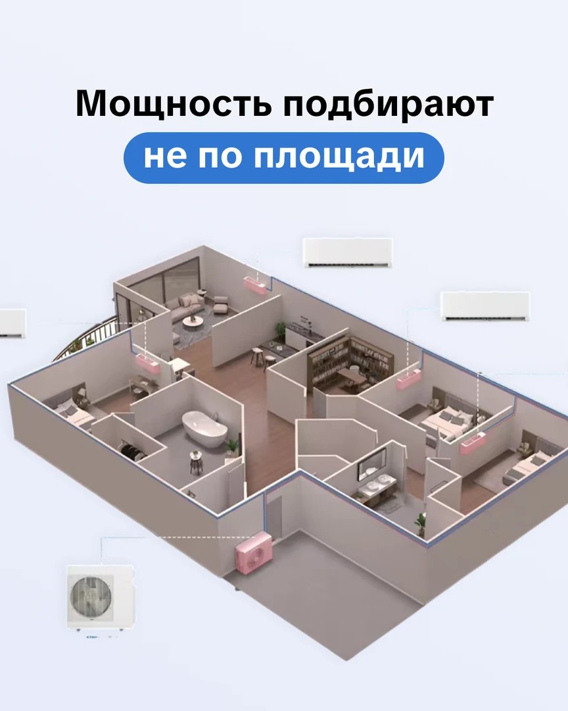
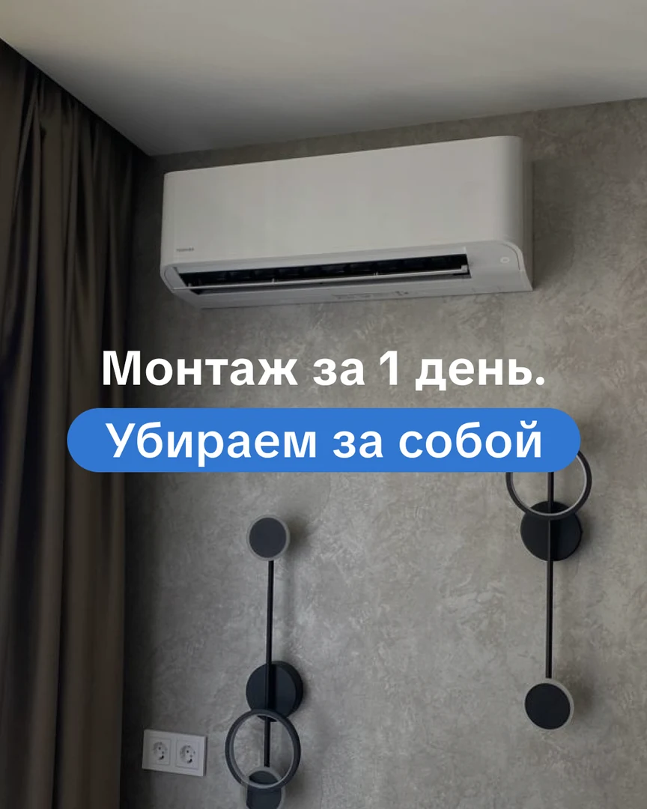
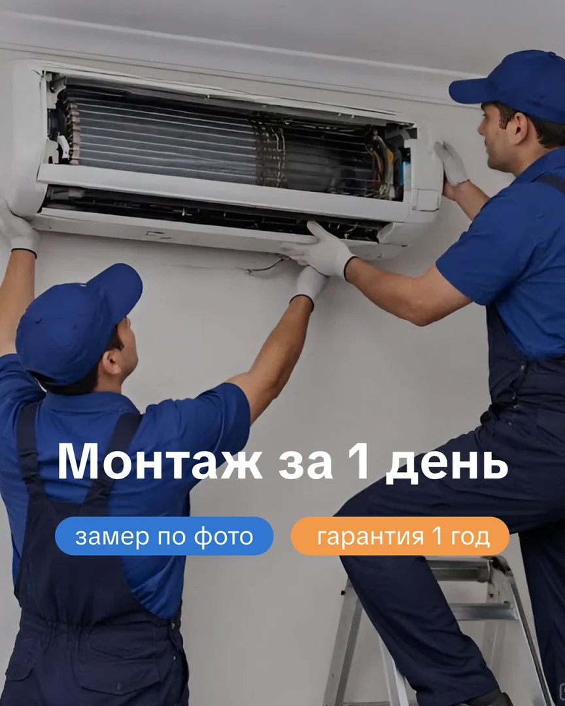
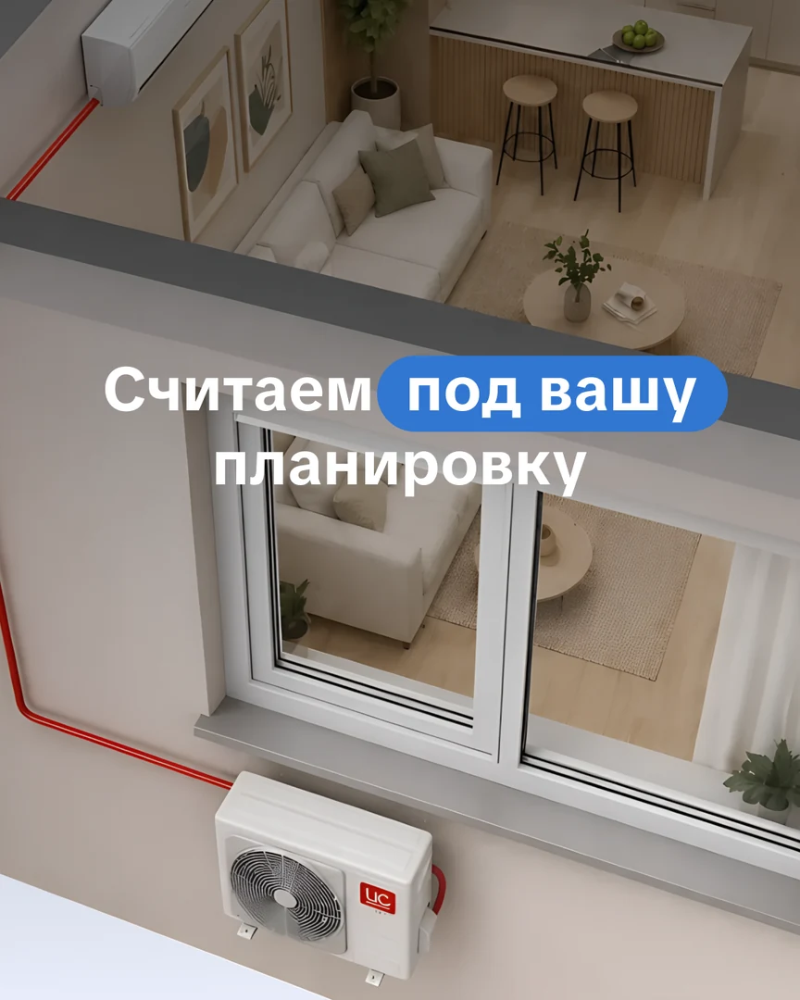
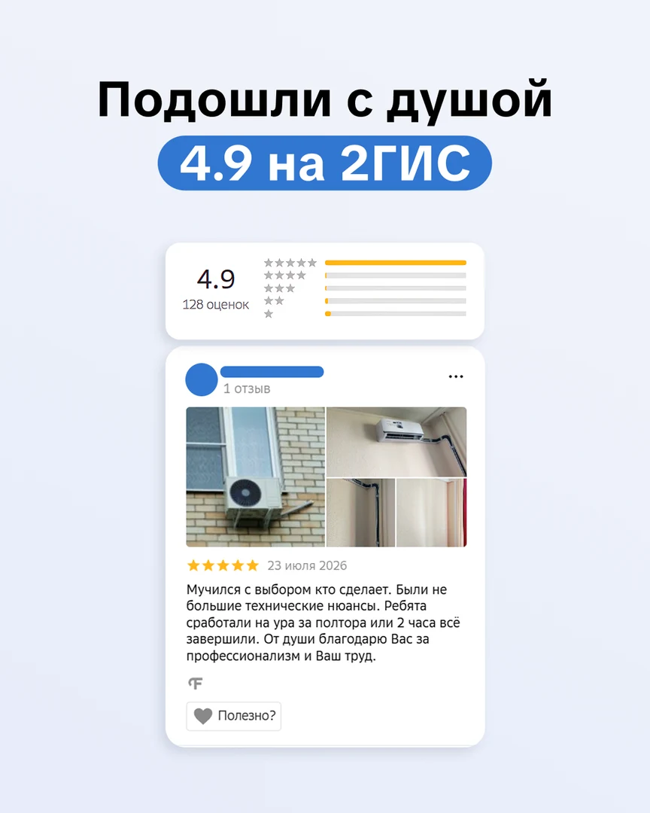
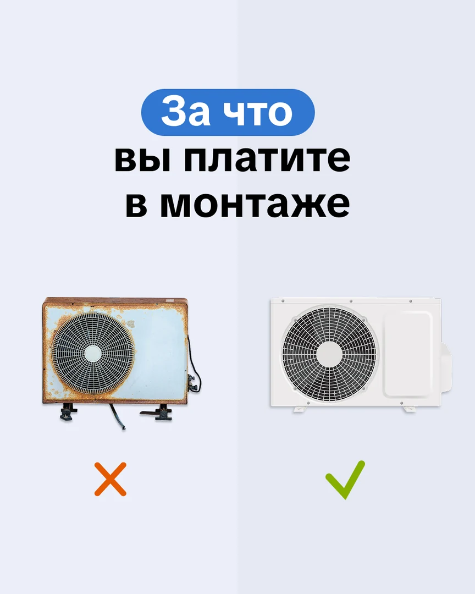

Климатические системы · ВКонтакте · август 2026
Как превратить тревогу перед монтажом в понятный путь к заявке
Для «Альянс Климат» собрали контент‑месяц вокруг реальных сомнений покупателя: как выбрать мощность, кто установит, не испортят ли ремонт, что входит в гарантию и почему опасно экономить на монтаже.
Собрали полный комплект10 постов и связанная серия из 5 историй — все финальные макеты показаны в кейсе.



Маркетинговая задача
Продавать не «коробку на стене», а спокойствие до и после установки
В этой сфере решение тормозит не отсутствие интереса. Покупатель боится ошибиться с техникой, скрытых расходов, неаккуратной бригады и проблем, с которыми потом останется один.
Что думает покупатель
«А если выберу не то?»
Хватит ли мощности?
Не испортят ли ремонт?
Почему монтаж столько стоит?
Что будет при браке?
Когда приедет мастер?
Что делает контент
Показывает решение до разговора с менеджером
Человек видит критерии выбора, реальный стандарт монтажа, типовые ошибки, отзыв, гарантийную логику и обслуживание. Каждый следующий материал снимает ещё один риск.
Маршрут: разобраться → сравнить → поверить процессу → увидеть гарантию → написать.
Баланс контента
Пять ролей — по две публикации на каждую
Лента не превращается ни в справочник, ни в десять одинаковых офферов. Польза объясняет, работы доказывают, мифы отстраивают, отзывы снимают риск, а предложения ведут к обращению.
Польза
Мощность под помещение и признаки, что технике нужна чистка.
Наши работы
Аккуратный монтаж и подбор системы под сложную планировку.
Разбор мифов
Ошибки при выборе и реальная цена слишком дешёвого монтажа.
Отзывы и результат
Культура работы и понятная ответственность при браке.
Предложение
Монтаж с гарантией и обслуживание перед пиком жары.
Истории — не случайный бонус
Один мини‑прогрев к ключевому посту о монтаже
Серия честно начинает с сезонной очереди, объясняет ценность качественной установки, показывает замер по фото и процесс, а затем переводит человека в пост.
Продукт целиком
План, вся лента, тексты и серия историй
Переключайте представления и открывайте любой макет крупно. Здесь показан весь допустимый финальный комплект без обрезки и заглушек.
10 последовательных тем
От выбора мощности до обслуживания
У каждой публикации своя роль: помочь, снять страх, доказать качество или предложить следующий шаг.
Вся лента
10 макетов в единой системе 4:5
Крупный заголовок, понятная ситуация и один смысл на обложке. Нажмите на любой макет, чтобы рассмотреть его.
Один мини‑прогрев
Пять экранов читаются как один рассказ
Истории не дублируют пост: они последовательно объясняют, почему качественный монтаж стоит ожидания, и ведут к подробному материалу.
Содержание за обложками
Что именно объясняет каждый пост
Раскройте тему, чтобы увидеть её маркетинговую задачу и смысл. Коммерческие условия относятся к периоду проекта.
От брифа до продукта
Факты прошли через маркетинг и дизайн
Скорость, гарантию, наличие и работу со сложными объектами уточнили до финальной упаковки — поэтому обложка не обещает больше, чем раскрывает текст.
- 01Собрали вопросы покупателей
Выбор мощности, качество монтажа, скрытые расходы, гарантия и обслуживание.
- 02Разложили по пяти ролям
По две темы на пользу, работы, мифы, доказательства и предложения.
- 03Уточнили спорные обещания
Замер, очередь, сроки сложных работ, гарантия и наличие техники сформулированы аккуратно.
- 04Собрали строгую визуальную систему
Синий и оранжевый, реальные объекты, чистая типографика и понятные обложки.
- 05Подготовили полный пакет
10 постов и 5 связанных историй собраны в одном готовом комплекте.
Точность оффера
Сильнее продаёт не громкость, а конкретика
Вместо абстрактного «качественно и быстро» материалы показывают, как устроен выбор и установка. Это снижает риск недоверия ещё до заявки.
Замер можно начать по фото
Для большинства объектов мощность, возможность монтажа и стоимость предварительно оценивают удалённо; сложный объект смотрит специалист.
Типовой монтаж
Для сложной установки закладывается до одного дня. Сезонную очередь не маскируют обещанием мгновенного выезда.
Гарантия на монтаж
Ответственность показана не общим словом, а понятным сроком и отдельной логикой действий при браке оборудования.
Проверка наличия
Технику не обещают вслепую: актуальность модели и сроков предлагают уточнять перед заказом.
Визуальная логика
Техническая тема выглядит просто, но не упрощённо
Реальные помещения и оборудование дают ощущение предметности. Светлые карточки объясняют сложное, а синие и оранжевые акценты держат ленту единой.



Результат проекта
Готовый результат проекта
На странице видны стратегия, тексты, визуальная система и полный комплект материалов.
Что сделали
- контент‑план из 10 постов для ВКонтакте;
- пять рубрик с равным балансом;
- связанный мини‑прогрев из 5 историй;
- 15 финальных визуальных макетов;
- весь комплект показан на этой странице.
Итог проекта
Подготовлены 10 публикаций и мини‑прогрев из 5 историй. Коммерческие показатели в проекте не измерялись.
Рейтинг и отзыв показаны внутри исторического макета проекта. Имя и аватар автора скрыты.
Вашу услугу тоже приходится долго объяснять?
Соберём контент, который ответит до звонка
Маркетолог выстроит логику, команда подготовит тексты и дизайн, а менеджер соберёт всё в один понятный процесс.